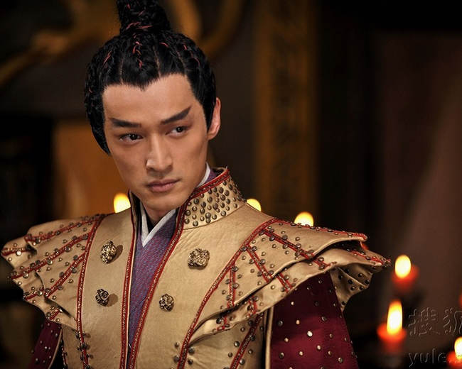

光影集锦

2007年6月22日，胡歌在北京举办复出仪式，正式宣布复出；6月23日，胡歌在受伤治疗期间创作的新书《幸福的拾荒者》发布，该书所得版税收益全部捐赠给慈善机构“苗圃行动”，在云南省威信县石坎村修建希望小学，并以已故助理“张冕”的名字命名。
2008年1月27日，主演的电视剧《仙剑奇侠传》于首播三年后首次上星播出；5月12日，发行个人音乐专辑《出发》，并在上海举行首唱会；7月19日，主演的金庸武侠剧《射雕英雄传》首播，胡歌饰演郭靖，并演唱片尾曲《乌云然》，并陆续在香港、台湾等地播出；10月16日，参与主演的武侠爱情电影《剑蝶》上映，胡歌饰演马承恩，首次尝试反派角色。
2009年4月27日，在由百万民众参与、近百名娱乐记者联合票选的“80后新生代娱乐大明星”评选中获封“四大小生”之一；6月28日，主演的古装仙侠剧《仙剑奇侠传三》首播，胡歌首次一人分饰三角，饰演永安当伙计景天、姜国太子龙阳、神界天将飞蓬，并演唱片尾曲《忘记时间》和插曲《光棍》，该剧在多个地面平台首播时均荣居收视榜首并获得四川电视节“收视贡献奖”，之后登陆台湾播出。
2010年1月2日，主演的穿越历史剧《神话》在央视八套首播，胡歌饰演现代青年易小川、秦朝将军蒙毅，并与白冰演唱片尾曲《美丽的神话》；2月14日，主演的电视剧《仙剑奇侠传三》上星播出，并获得第16届上海电视节互联网大众票选活动“最具网络精神电视剧”奖项；7月2日，发行音乐专辑《蓝光》；8月3日，主演的都市伦理剧《苦咖啡》首播，胡歌饰演职场白领陈琮；10月20日，在首届中国大学生电视节上凭借电视剧《神话》获得“网络人气奖”；11月13日，在第4届华鼎奖上，《神话》获得“传奇题材类最佳电视剧”，胡歌凭借该剧获得“传奇类题材最佳男演员奖”。
主要作品
2017年2月，胡歌首次发声宣布求学，将暂别影视圈。胡歌表示：“17年有个大计划，未来一两年很难看到新作品，我的计划是我要去学习，希望你们可以支持我、鼓励我。”[2]11月，演唱《猎场》主题曲《盛开》；[3]11月18日，亮相《快乐大本营》。[1]11月24日，参加综艺节目《天天向上》。[4]12月6日，第一财经周刊与凯度华通明略联合发布的“明星价值榜”，胡歌排名第6。[5]
2018年3月，入选《中国电视剧60年大系•人物卷》[2]。5月24日，凭借《猎场》入围第24届上海电视节白玉兰奖最佳男主角奖。[6]8月15日，获得第29届中国电视金鹰奖观众喜爱的男演员奖提名。[7]11月9日，特别出演由周迅、秦昊主演，岩井俊二原著、编剧并导演的电影《你好，之华》上映。12月，《第一财经周刊》与秒针系统联合发布“2018最具商业价值明星榜”，胡歌排名第52位。[8]12月21-25日，参演的话剧《如梦之梦》在北京保利剧院上演，在剧中饰演五号病人（青年）。
2019年1月10-12日和2月22-24日，参演的话剧《如梦之梦》分别在上海上剧场与重庆大剧院上演，在剧中饰演五号病人（青年）。[9]2月21日，主演的电影《李娜》杀青，在剧中饰演姜山。[10]5月，参演的电影《南方车站的聚会》在戛纳电影节上映，在片中饰演周泽农。[11][12]9月30日，参演的电影《攀登者》上映。[13][14]